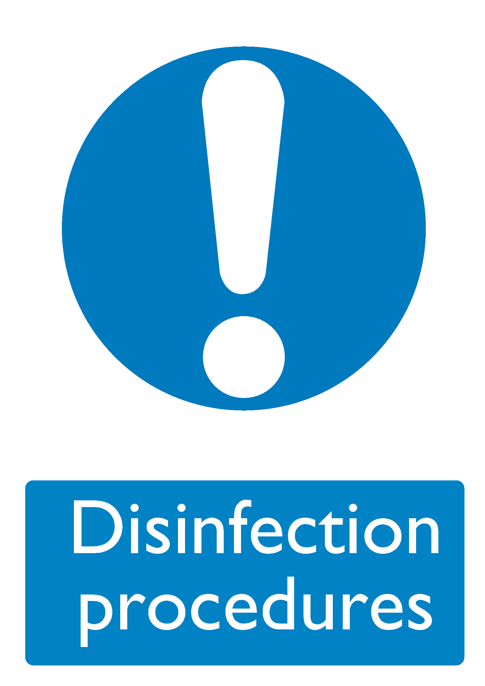

| Control ID (URI) |
https://bhdirectory.github.io/risk/control-register/disinfection-procedures.html |
|---|---|
| Control Icon |  |
| Description |
More intensive cleaning may be required in certain circumstances to prevent the spread of infection. This would be carried out by suitably trained staff. Routine disinfection occurs in relation to the control of Legionella in the water system, in the laundry, in food preparation areas and in communal washing facilities. Disinfection will also take place where there has been a spillage or where bodily fluids are involved. |
| Associated Risks | |
| Further Information |
|